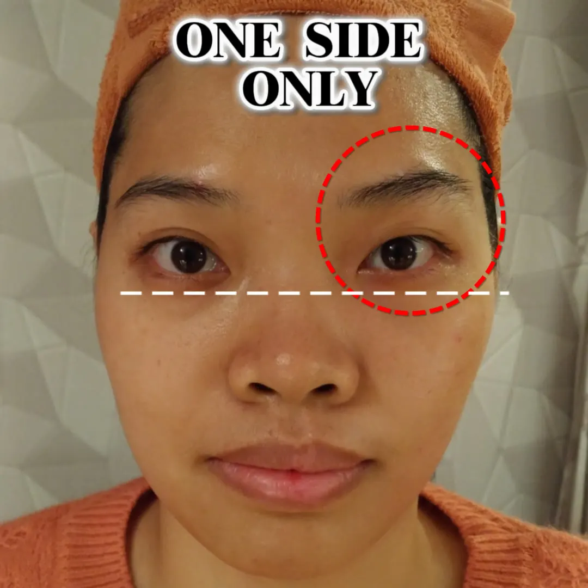

Free 1:18 'Above-the-Brow' Demonstration
One side was worked
for 5 minutes.
Can you tell which? Click play to unlock the exact 1-minute 18-second ‘Above-the-Brow’ Demonstration, the technique behind this one-side result.
Easing facial tension: see how Yu-Ting stabilizes delicate skin with a guiding hand and guides a smooth, rounded stick in slow, gentle circles. No needles, harsh scraping, or skin pulling.
Unlock the ‘Eye Reset’ Protocol Now
100% Free & Secure. We hate spam too. · Beginner-friendly biomechanics, no rubbing, no skin pulling.
Join 1,000+ women learning gentle bojin at home, across Taiwan, Hong Kong & Malaysia.

So what did she do? · The 1:18 Above-the-Brow Demonstration
In this free 1:18 demonstration, you’ll see
- Where Technique #1 begins: the exact inner-brow point most people miss, shown up close.
- The exact angle and pressure a written guide can never quite show you.
- Why one side lifts and looks more awake in minutes, and how to do the same yourself.
- The release-first approach: why tension and puffiness have to be eased before anything else, so your effort stops working against you.
No tool needed to watch. Tonight, you can gently practice with your fingertips and supporting hand while waiting for a tool. The demonstration shows a rounded stainless steel stick.
Sound familiar?
You sleep a full night, and your eyes still look tired.
Puffy lids in the morning. Shadows that make you look worn out in photos. That heavy, done-by-noon feeling around the eyes, even when nothing’s wrong. After 40, thinner skin and slower overnight drainage let fluid pool and tension settle, so the eyes are usually the first place a tired face shows.
A tired-looking face can have more than one explanation. This video shows a self-care technique; it cannot establish the cause of a change in appearance. The one-side comparisons are individual examples, not a promise of your result.
In their words
I had a full-body session and learned facial bojin too. She worked with such care — it felt lovely, and I felt much looser afterwards. — Kiko T., Taiwan
So attentive, teaching hands-on, and the material was rich and thorough. You’ll come away knowing exactly how to do it. — Stephanie L., Hong Kong
Individual experiences vary. This is gentle self-care, not medical treatment.

Who’s teaching you
Hi, I’m Yu-Ting Lan.
I’m an international bojin instructor and the founder of Héhé Studio. Over the past several years I’ve taught more than a thousand students across Taiwan, Hong Kong and Malaysia: complete beginners, grandmothers, and men included. This little video is the gentlest possible place to start.
A few quick questions
Do I need any special tools?
No tool is needed to watch. The 1:18 demonstration uses a rounded stainless steel stick, but you can gently practice with your fingertips and supporting hand tonight while waiting for your tool. Stay above the brow bone, avoid the eyelid and eyeball, and stop if uncomfortable.
How is Bojin different from Gua Sha?
Bojin and Gua Sha are different practices. This demonstration focuses on small, slow movements, tool handling, and a supporting hand. Watch the technique before deciding whether to try it.
Is this suitable if I’ve never done anything like this?
Yes, it’s designed for complete beginners. Everything is gentle and slow, with no rubbing and no skin pulling.
How long until I see a difference?
There is no promised timeline or visible result. Use the video to learn the movement and notice your experience, without trying to force a change.
Is it safe?
It’s a gentle, low-pressure routine. It isn’t medical treatment. If you have a skin or health condition, check with your doctor first.
Start tonight
See the technique behind
the one-side result.
Enter your email and the free 1:18 demonstration is ready to watch in seconds.
Unlock the ‘Eye Reset’ Protocol Now
100% Free & Secure. We hate spam too. · For self-care and educational purposes only. Not medical advice, diagnosis, or treatment.
Want to explore other areas first? See one-side examples · Take the 1-minute tension quiz · Beginner guide